技术文章画图那些事
Contents
看draveness 的blog的时候，总是会在评论中看到问他图是什么画的。 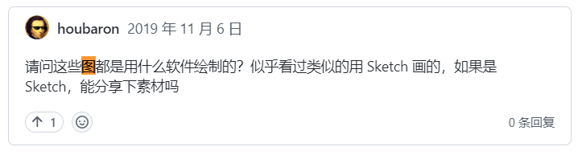
以至于他不胜其扰，专门写了一篇文章讲他如何画图的。 https://draveness.me/sketch-and-sketch/ 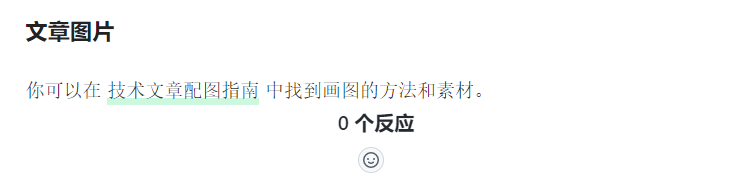
我也是从他这篇文章中学习到不少知识。比如，以下这些原则：
- 图片必须足够美观并且清晰地传达想要表现的内容；
- 是技术博客中出现图片的意义；
- 图片必须能够在短时间内实现量产，不影响写作的效率；
- 博客中的全部图片都是在写作的过程中一一绘制的，而不是最后统一完成的，所以会希望画图的时间可以尽量短，一旦画图的时间超过过长，那么整个思路就会被打断；
- 博客的内容和逻辑相比于图片更加重要，作者不希望在上面花费过长的时间；
- 图片需要保证风格上的一致性，不会显得非常突兀；
- 图片的风格和配色对于作者来说就是签名，形成统一的风格之后会给读者留下比较深的印象；
工具
画图的工具其实不是最重要的，一般现在流行的有
- excalidraw 免费
- visio
- OmniGraffle
- LucidChart
- Sketch
- drawio 免费
- ……
我本人之前使用visio较多，现在也转移到excalidraw 上来
配色
配色也是很重要的一环。推荐的配色网站有：
配色模板
https://coolors.co/palettes/trending 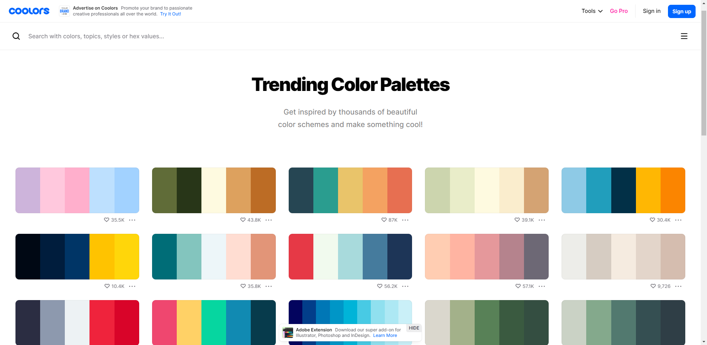
或者这个
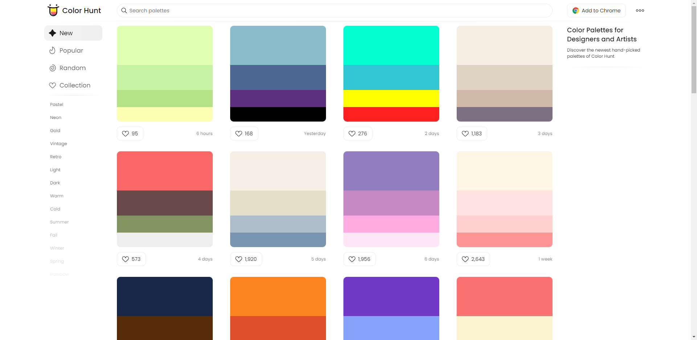
同色系生成
https://uicolors.app/create 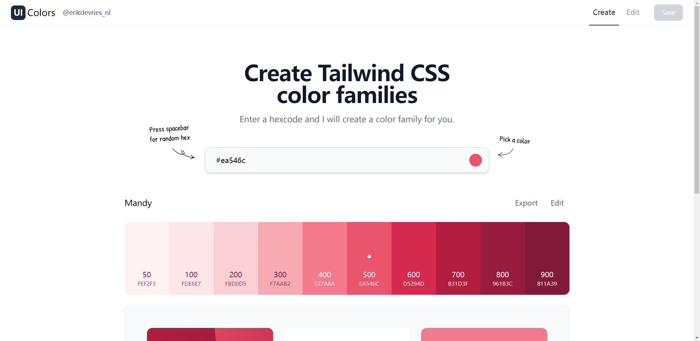
主要是坚持使用一个配色，色彩不宜过多，过多容易花里胡哨的。
他山之石
我也会收集一些优秀blog的画图经验。
下面举一些例子 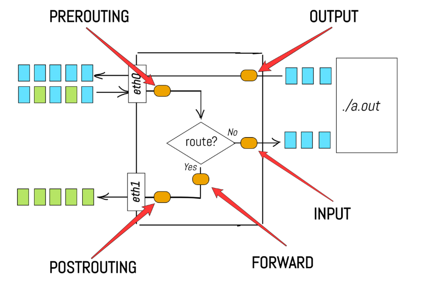
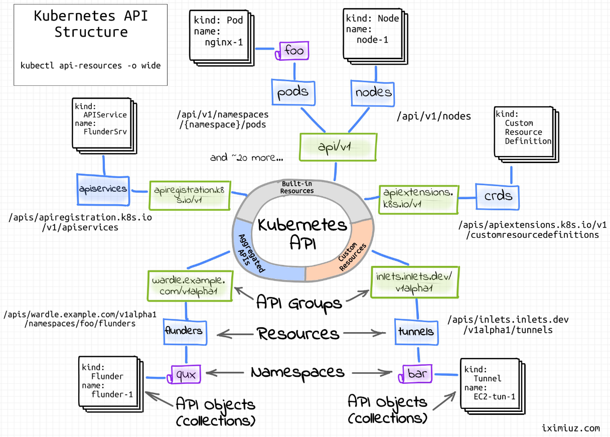
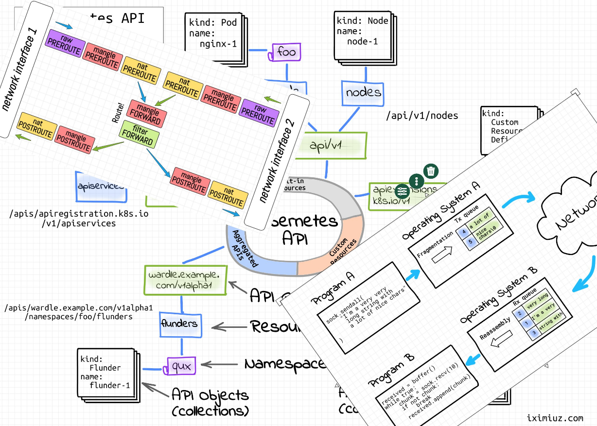
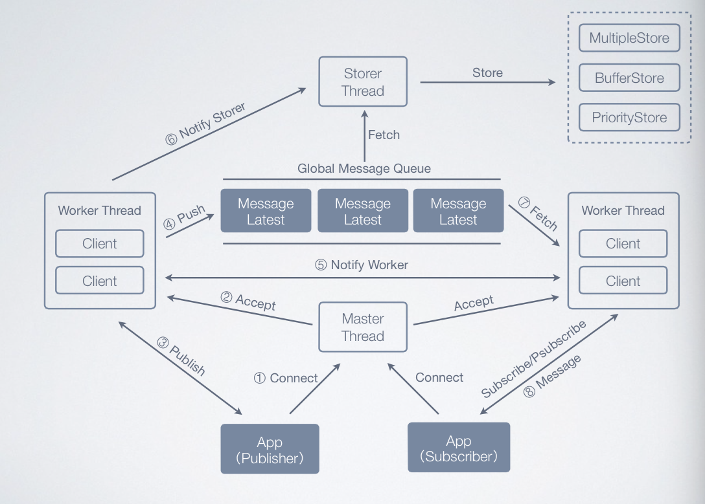
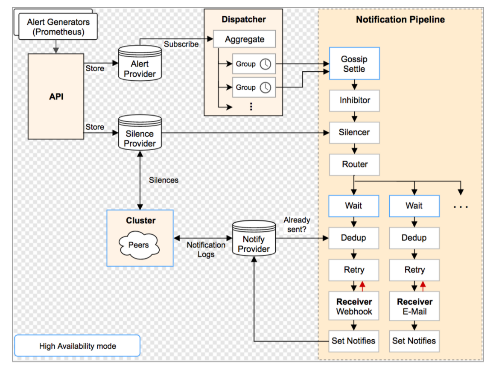
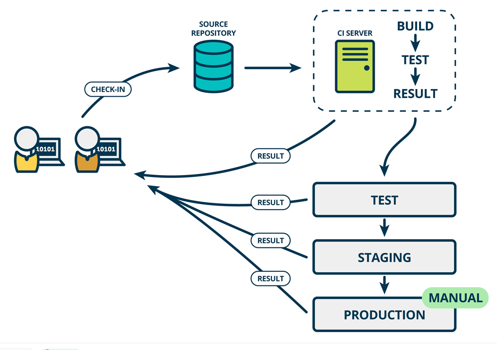
有个叫陈天的人画图也不错。他都是使用excalidraw 画的。 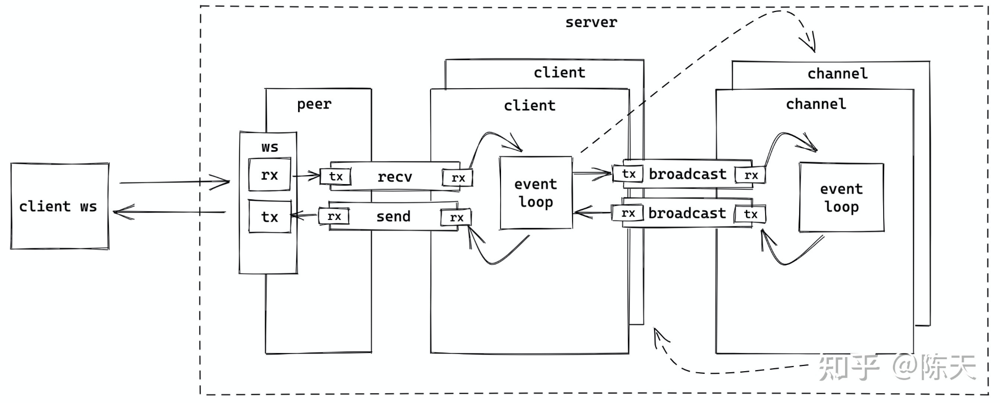
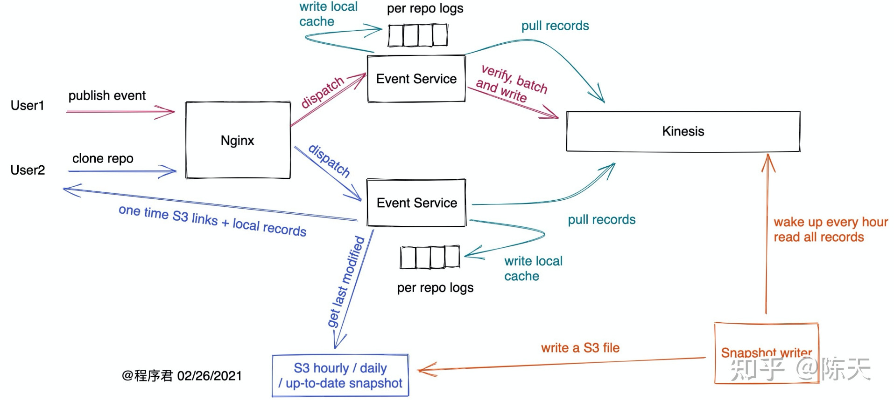
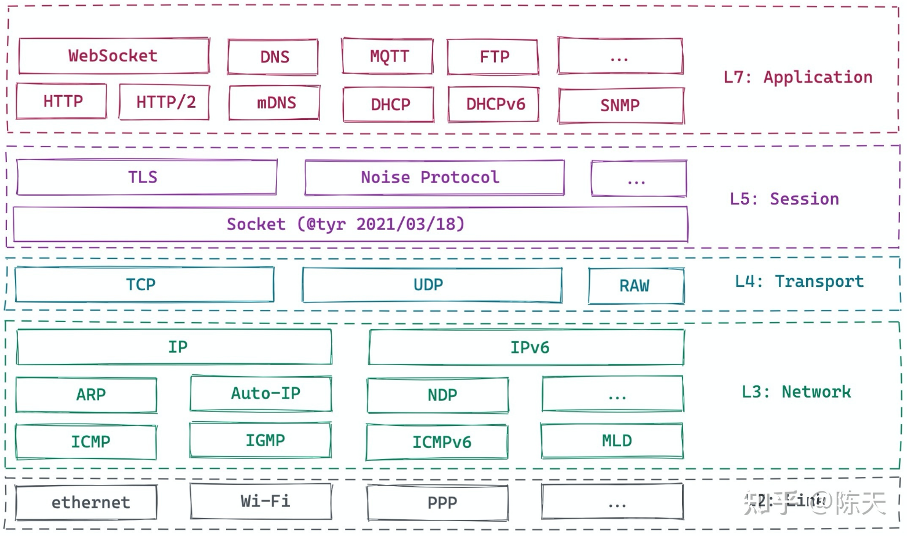
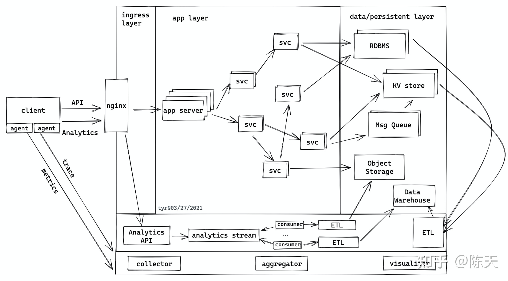
他还有一篇文章，讲解他是如何使用工具的。《用 Excalidraw 更好地记录和表达》https://mp.weixin.qq.com/s/vnQawn2QzkJ9ak-5A2_VUw
格物致知
最后，还需要多多练习。写技术文档的时候，可以画起来。
下面是我自己画的一些配图： 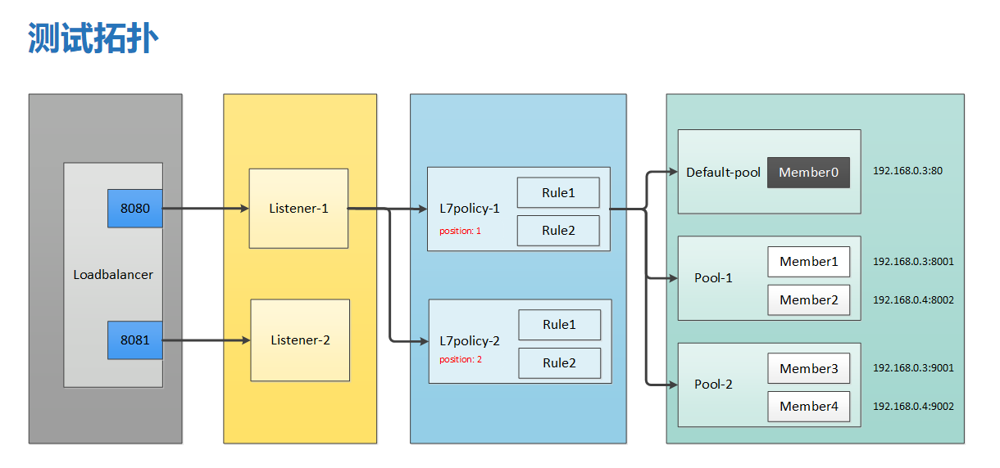
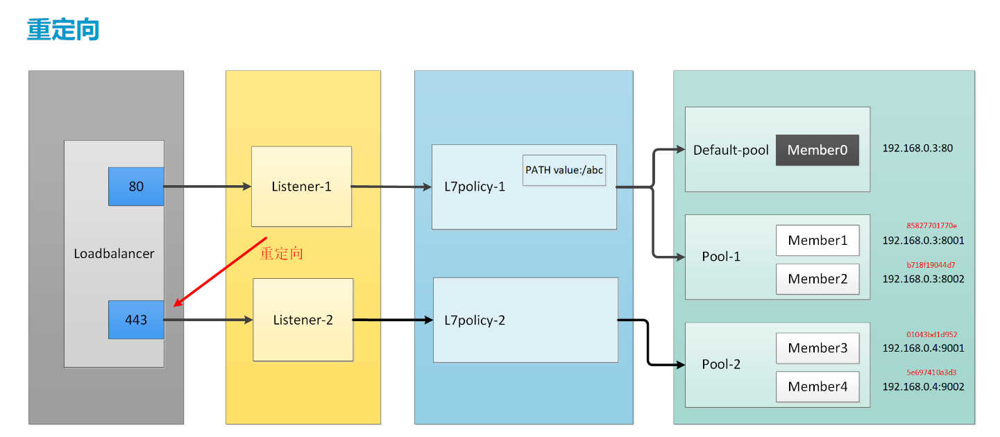
大规模测试的： 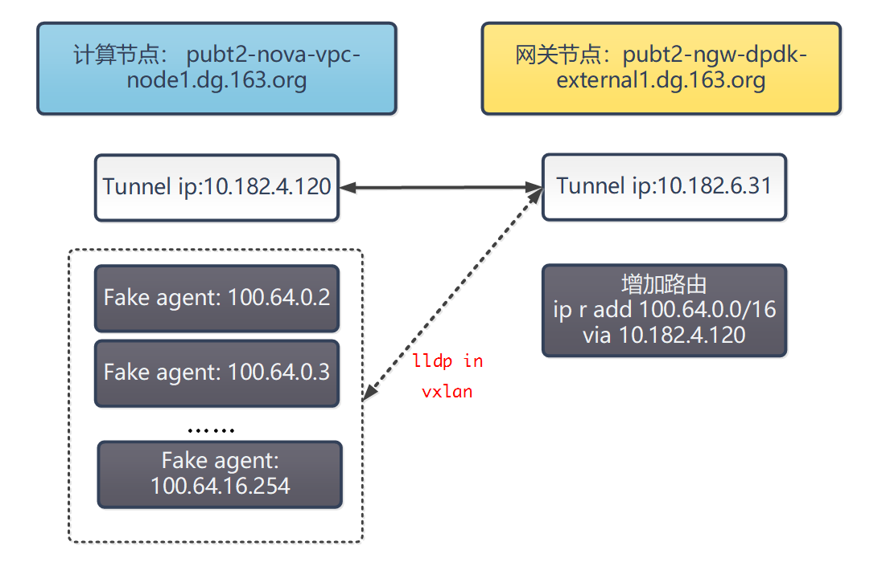
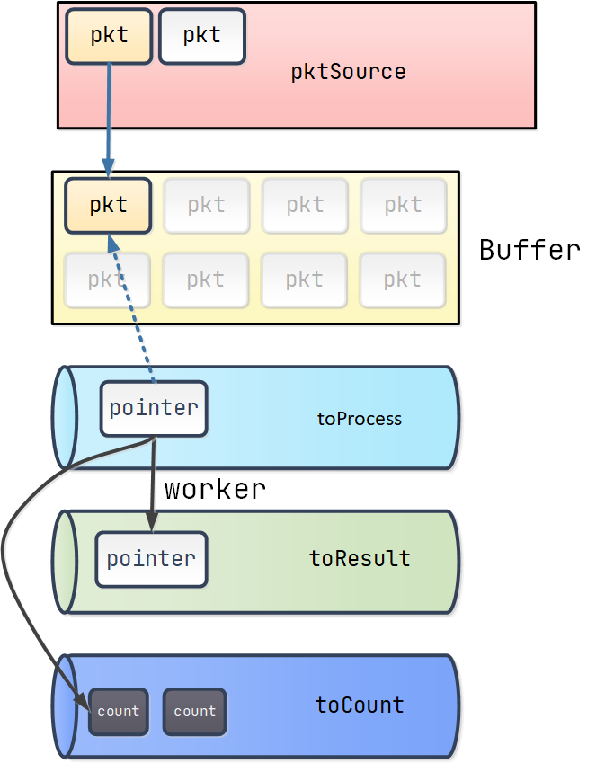
Author smasterfree
LastMod 2022-09-04